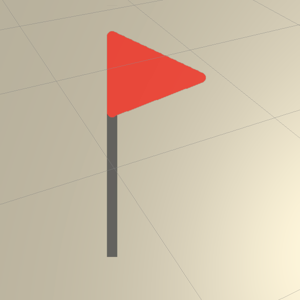
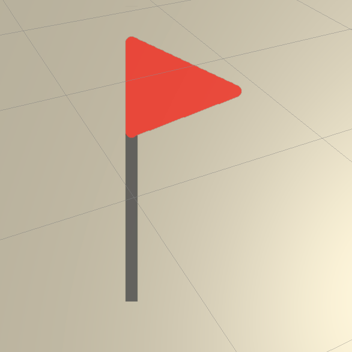

WPT Level Builder Documentation: Directive Elements
Player Spawnpoint

This marks a location where players may spawn at the beginning of a level.
Logic Gate
This element has not been implemented yet. Do not use it in your levels.

This marks a location where players may spawn at the beginning of a level.
This element has not been implemented yet. Do not use it in your levels.